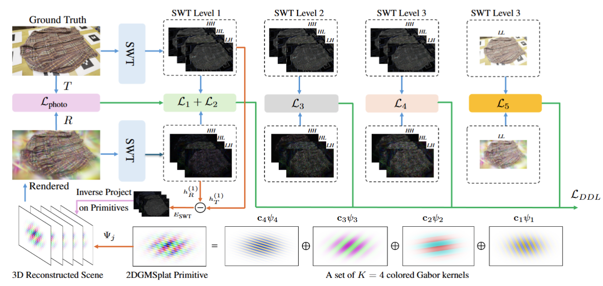

Abstract
Recent 3D Gaussian Splatting methods achieve real-time, high-quality novel view synthesis, but standard Gaussian primitives struggle to represent high-frequency details such as sharp edges, fine textures, and abrupt color changes in the scene. To address this, we propose 2D Gabor Mixture Splatting (2DGMSplat), a compact representation that embeds multiple Gabor kernels with different frequencies and colors into a single compact primitive, allowing richer spatial detail with fewer redundant primitives. Since optimizing Gabor frequencies and orientations is highly nonlinear, we introduce a dual-domain loss combining photometric supervision with wavelet-domain guidance. We further design a wavelet-error-driven densification strategy to selectively clone and prune primitives. Experiments on High-Frequency, Mip-NeRF360, T&T, and Deep Blending datasets show improved reconstruction of complex high-frequency textures.
Method

Figure: Overview of the proposed pipeline.
Overview of the proposed Gabor mixture representation (2DGMSplat), dual-domain loss, and wavelet-based error densification strategy. Each primitive is modeled as a mixture of K colored Gabor wavelets, all sharing the same Gaussian envelope, as illustrated with K = 4. ci represents the color parameters for the Gabor wavelet ψi. The combination of these Gabor components forms Ψj, corresponding to one primitive in the 3D scene.
For the dual-domain loss, both the ground-truth image T and the rendered image R are decomposed using a three-level stationary wavelet transform, J = 3, with the Haar/DB1 wavelet. The loss terms are summed across the decomposition levels, as indicated by the green lines in the method overview.
For wavelet error-guided densification, the same Haar/DB1 wavelet is used, but only the first-level high-frequency sub-bands, HL, LH, and HH, are considered, as highlighted by the orange lines. These sub-bands are used to calculate the wavelet-domain error map ESWT, which is then inversely projected onto the 3D scene to select primitives for adaptive density control.
Video
Citation
@inproceedings{
title = {2DGMSplat: 2D Gabor Splatting with Colored Mixture of Kernels and Dual Domain Optimization},
author = {},
booktitle = {},
year = {}
}